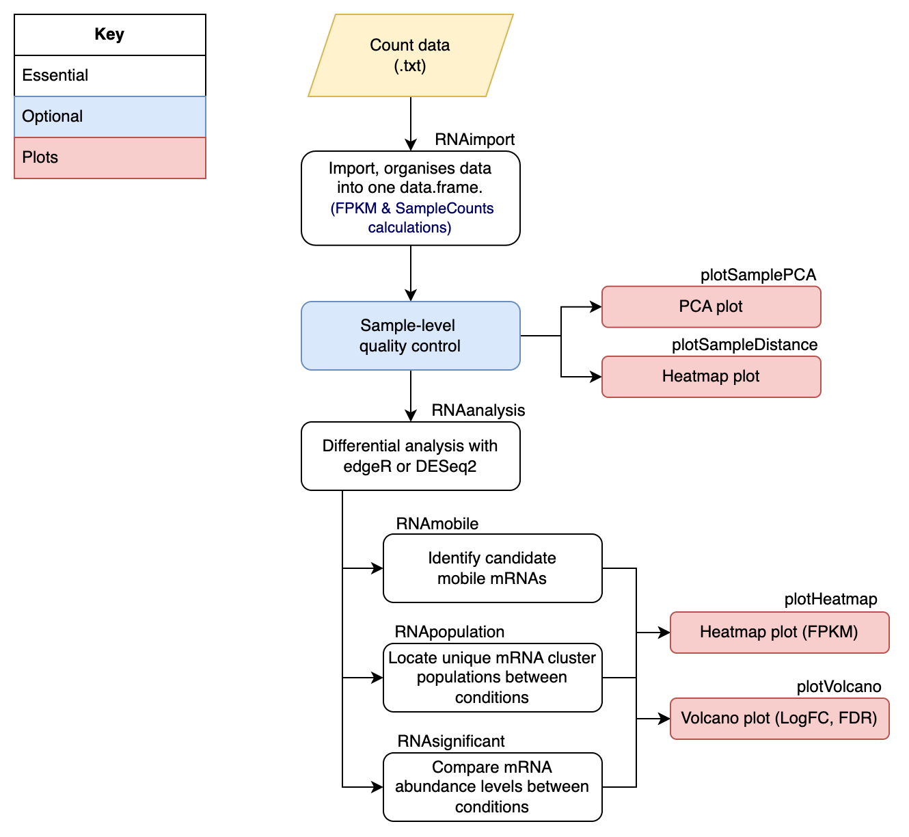

Explore canditate mobile mRNAs & population-scale mRNA changes in chimeric systems using mobileRNA
Katie Jeynes-Cupper, Marco Catoni
2023-08-01
Source:vignettes/mobileRNA_mRNA.Rmd
mobileRNA_mRNA.RmdIntroduction
Similarly to sRNAs, messenger RNA (mRNA) molecules have also been believed to move systemically throughout plants, and grafting has been a tool to study this. Interspecific grafting could lead to the movement of foreign endogenous mRNAs from one genotype to another. Here, we describe a pipeline to assist with this specific analysis.
Methods
This manual offers a pipeline for the analysis of mRNAseq data taken from chimeric or non-chimeric systems. For example, plant grafting experiments between different cultivars and species (with distinct genome assemblies). This pipeline involves pre-processing and analysis steps for the identification of candidate mobile mRNA molecules and the exploration of population level changes in chimeric systems.
For chimeric systems: To make the best possible prediction of candidate mobile mRNA, here we have utilised the optimisations of the mapping algorithm in the pre-processing of clean mRNA reads. Here, we supply the mapping algorithms with as much information as possible to best place the mRNA in its most likely location between two genome assemblies. Hence, this includes supplying two genome assemblies at the same time, through the use of a merged genome. A merged genome is a single FASTA file containing multiple genome assemblies. In many databases, the chromosome names have been consistently named using the same patterns. This means that when you merge multiple genome assemblies together it is very challenging to distinguish the individual genomes in the merged file as they have similar chromosome names. Here, we offer a function to merge two genome assemblies or annotations into a single file, and the function is able to maintain the distinguish-ability by adding a distinct pre-fix to chromosome names in each genome. The second piece of extra information we can supply th algorithm is a list of all gene loci identified across the sample replicates in the analysis. This ensure consistency across the analysis and helps prevent false assumptions. Collectively, considering the extra information should optimise the alignment of mRNAs to the bets locations within the merged genome.
The analysis is a simple 5-step workflow to identify both candidate mobile mRNAs and explore the population-scale dynamics in one. Additional features are available and recommend to include in the analysis which includes quality
control analysis (PCA, comparative heatmap) and plotting of the results as a heatmap representing the normalised FPKM and a volcano plot illustrating the logfoldchange against the false discovery rate (FDR). When working with a chimeric system, mapping error can easily be recognised and required functions can remove these when specified (see , and see ).
Finally, during identification of the candidate mobile molecules (see function ) the user can set a threshold parameter to either result in a more stringent or looser outcomes. The threshold parameter filters the data to select a minimum number of replicates in the analysis which contained read counts for a locus. This will enable users to select candidate mobile mRNAs which are consistently represented across the treatment replicates.
Here we introduce the use of statistical analysis to identify mobile mRNA molecules in chimeric systems, and it should be emphasized that this is an optional step. However, statistical analysis for the exploration of population dynamics should be a mandatory step. Here we include a single function which can be instructed to undertake differential analysis using either the edgeR or DESeq2 method (see function ). The function outputs additional columns to your working dataset, including the raw count mean, log2FoldChange, p-value and adjusted p-value.
For non-chimeric systems: Similar to the pre-processing steps for the chimeric system, it is suggest that users still employ the first “De Novo mRNA identification” step to assist the aligning algorithm. Although, no merged genome will be employed.
Non-chimeric systems involve a single genotype, hence, the pipeline for exploring population-scale mRNA changes is more fitting. This pipeline will allow the user to identify mRNA which are statistically more or less abundant in the treatment compared to the control and whether any unique populations are found within either the treatment or the control samples.
To explore changes in mRNA abundance, we can utilise statistical analysis with either DESeq2 or edgeR. For either method, the recommended/standard parameter and steps have been employed. The function outputs additional columns to your working dataset, including the raw count mean, log2FoldChange, p-value and adjusted p-value. The differences in abundance can be explored by extracting statistically significant mRNA-genes from the analysis.
Workflow Summary
The summarised workflow is shown below, where it begins in R-Studio to merge the two genome assemblies into one, then the pre-processing moves into Linux to align each replicate to the merged reference and then back into R-Studio to undertake the analysis to identify potentially mobile RNA species.

The recommended analysis pipeline in R can be seen below:

Installation
The latest version of mobileRNA can be installed via GitHub using the devtools package:
if (!require("devtools")) install.packages("devtools")
devtools::install_github("KJeynesCupper/mobileRNA", ref = "main")Load package to library:
An overview of the data used
For the following examples, a semi-synthetic messenger RNA-seq data set has been utilised to simulate the movement of mRNA molecules from an Tomato (Solanium lycopersicum) rootstock to a Eggplant (Solanium melongena) scion, a grafting system known to be compatible.
The three heterograft replicates: known as:
heterograft_1,heterograft_2&heterograft_3are individual tomato replicates spiked with 150 tomato sRNA clusters.The self-graft replicates: known as
selfgraft_1,selfgraft_2&selfgraft_3, are the individual tomato replicates without the spiked tomato sRNA clusters.
The replicates mirror each other where, for instance, heterograft_1 and selfgraft_1 are the same replicate, either with or without the spiked clusters. These replicates serve for the aim to analyse mRNA mobility.
The data set, called mRNA_data, stores a matrix containing the pre-processed data from the experiment. As a user, this allows you to see what a full data set might look like and how you might expect it to change across the analysis. Please not that the data has been doctored to reduce the size of the file.
These can be loaded in these R workspace by using the following command:
data("mRNA_data")Data organisation
There are two key elements required for the pipeline analysis: * sRNA-seq sample replicates (.fastq/.fq) * Two reference genomes (.fasta/.fa)
And one additional element; to improve functional analysis: * Reference genome annotations (.gff/.gff3)
Naming data files
It is recommended to rename your files to names you wish for them to be represented as within the analysis and shown as labels in plots. Plus, it makes the analysis easier!
For example, instead of names such as:
- 1:
sample_1.fq - 2:
sample_2.fq - 3:
sample_3.fq - 4:
sample_4.fq - 5:
sample_5.fq - 6:
sample_6.fq
For the example data set included in the package, here we have renamed the files based on the condition (treatment or control).For the hetero-grafts, where the is a eggplant scion and an tomato rootstock:
- 1:
heterograft_1.fq - 2:
heterograft_2.fq - 3:
heterograft_3.fq
and for the eggplant self-grafts:
- 4:
selfgraft_1.fq - 5:
selfgraft_2.fq - 6:
selfgraft_3.fq
Pre-Processing
The pre-processing step involves cleaning raw data and aligning data to the merged genome. Going forward, the pipeline has assumed that the mRNA-seq samples have met quality control standards.
Here, we introduce an alternative mapping method for the analysis of plant heterograft samples. The heterograft system involves two genotypes; here the two genome references are merged into a single reference to which samples are aligned to.
mobileRNA offers a function to merge two FASTA reference genomes into one. To distinguish between the reference genomes in a merged file, it is important to make sure the chromosome names between the genomes are different and distinguishable. The function below added a particular character string to the start of each chromosome name in each reference genome. As standard, the string A_ is added to the reference genome supplied to genomeA and B_ is added to the reference genome supplied to genomeB. These can be customized to the users preference, see manual for more information.
Pre-mapping
Here we will merge two genome assemblies or annotations into a merged file. It is of the most importance that both the merged genome and merged annotation contained the same modifications to the chromosome names.
Merging Genome Assemblies
Here we merge the two reference genomes into a single merged genome using the [mobileRNA::RNAgenomeMerge()] function. As default, this function changes the chromosome names of each genome to ensure they are distinguishable. To do so, the function requires an input of the initials of each organism’s Latin name. But why do this:
If the two genomes use the same pattern to name the chromosomes, the user will not be able to differentiate the chromosomes from one another in the merged genome. This could be solves by adding letters to the chromosomes of one of the genomes, for example,
SMto represent the Latin name of eggplant.If a chromosome naming pattern contains punctuation, the mapping step will not work.
In the example, the Solanum lycopersicum (version 4) genome contains a full-stop/period within each chromosome name which needs to be removed as well. Here we rename the chromosomes of the tomato genome to SL and the chromosomes related to the eggplant genome (Solanum melongena) to SM.
RNAmergeGenomes(genomeA ="/Users/user1/projectname/workplace/reference/ref1.fa",
genomeB ="/Users/user1/projectname/workplace/reference/ref2.fa",
abbreviationGenomeA = "SL",
abbreviationGenomeB = "SM",
out_dir = "/Users/user1/projectname/workplace/reference/merge/
ref_merged.fa")Merging Genome Annotations
To assist the processing of raw count files, the genomic annotation files (GFF) of each reference genome must be merged in the same way the reference genomes were. This includes following the same naming patterns for the chromosomes in each genome as undertaken earlier with the RNAmergeGenomes() function. To undertake a similar merging between the two GFF files, use the RNAmergeAnnotations function.
## merge the annotation files into a single annotation file
RNAmergeAnnotation(annotationA = "/Users/user1/projectname/workplace/
annotation/annotation_1.gff3",
annotationB = "/Users/user1/projectname/workplace/
annotation/annotation_1.gff3",
abbreviationAnnoA = "SL",
abbreviationAnnoB = "SM"
out_dir = "/Users/user1/projectname/workplace/
annotation/merge/anno_merged.gff")Auto-Detection of mRNA loci
Here we identify and build a list mRNA loci within each sample to assist the mapping step later on to ensure consistency across the analysis. This step is very important to consider in the analysis as it prevents false assumptions. This step aligns a replicate to the given genome assembly and the output contains loci where mRNA reads aligned.
Analysis
Here, the analysis of the pre-processed data occurs, with the aim to identify if any mobile mRNA molecules and population-scale mRNA changes in (non)chimeric systems.
Import Data
In the pre-processing steps, the data was cleaned and aligned to the merged reference genome. During the mapping step, a folder for each sample is created which stores all the results in. The analysis steps requires the information which is stored in the Results.txt.
The RNAimport() function imports the data from the folder containing all sample folders. The function extracts the required information, stores it in a matrix.
The function requires some information to coordinate the importation and calculations. It requires a directory path to your processed samples; this is the path to the folder containing all the individual sample folders which is stores in argument directory. The second directory path is to the loci file containing information on the loci of the sRNA clusters across the analysis, stored in the argument loci. The last pieces of information the function requires a vector containing the sample names, both treatment and control replicates which is stored in the argument samples. The sample names must match the names of the folders produced in the mapping, and stored in the directory supplied to the argument directory.
## Import & organise data.
results_dir <- "./analysis/alignment_unique_two/"
sample_names <- c("heterograft_1","heterograft_2", "heterograft_3",
"selfgraft_1", "selfgraft_2", "selfgraft_3")
mRNA_data <- RNAimport(input = "mRNA",
annotation = "./annotation/merged_anno.gff",
directory = results_dir,
samples = sample_names)Sample-level quality control
A handy step in the analysis is to assess the overall similarity between sample replicates to understand which samples are the most similar and which are different, and where the most variation is introduced in the data set. As well as understanding whether the data set meets your expectations. It is expected that between the conditions, the sample replicates show enough variation to suggest that the replicates are from different groups.
To investigate the sample similarity/difference, we will undertake sample-level quality control using three different methods: - Principle component analysis (PCA) - Hierarchical clustering Heatmap
This will show us how well samples within each condition cluster together, which may highlight outliers. Plus, to show whether our experimental conditions represent the main source of variation in the data set.
Here we will be employing an unsupervised clustering methods for the PCA and hierarchical clustering Heatmap. This involves an unbiased log2-transformation of the counts which will emphasis the the sample clustering to improve visualization. The DESeq2 package contains a particularly useful function to undertake regularized log transformation (rlog) which controls the variance across the mean, and in this package we have utilized this for the quality control steps.
Principle component analysis to assess sample distance
Principal Component Analysis (PCA) is a useful technique to illustrate sample distance as it emphasizes the variation through the reduction of dimensions in the data set. Here, we introduce the function plotSamplePCA()
group <- c("Heterograft", "Heterograft", "Heterograft",
"Selfgraft", "Selfgraft", "Selfgraft")
plotSamplePCA(mRNA_data, group)Hierarchical clustered heatmap to assess sample distance
Similarly, to a PCA plot, the plotSampleDistance() function undertakes hierarchical clustering with an unbiased log transformation to calculate sample distance and is plotted in the form of a heatmap.
plotSampleDistance(mRNA_data)Differential Expression analysis with DESeq2 or edgeR
Differential expression (DE) analysis is undertaken to identify mRNA which are statistically significant to discover quantitative changes in the expression levels between the treatment (hetero-grafting) and the control (self-grafting) groups. This technique can be undertaken with a variety of tools, in mobileRNA users have the option to use the DESeq2 or edgeR analytical method.
In particular case, one method may be preferred over the other. For instance, the DESeq2 method is not appropriate when the experiment does not contain replicate (ie. one sample replicate per condition). On the other hand, edgeR can be used. Here, we have included the recommend practice for edgeR when the data set does not contain replicates. This option can be employed by setting a custom dispersion value, see argument dispersionValue.
# sample conditions in order within dataframe
groups <- c("Heterograft", "Heterograft", "Heterograft",
"Selfgraft", "Selfgraft", "Selfgraft")
## Differential analysis of whole dataset: DEseq2 method
mRNA_DESeq2 <- RNAanalysis(data = mRNA_data,
group = groups,
method = "DESeq2" )
## Differential analysis of whole dataset: edgeR method
mRNA_edgeR <- RNAanalysis(data = mRNA_data,
group = groups,
method = "edgeR" )Identify the mobile molecules
It is essential to remove the noise from the data to isolate potential mobile molecules through the removal mRNA molecules which map to the tissue-origin genotype, and mapping errors.
To remove molecules mapped to a specific genome set the "task" parameter to “remove”, while to keep molecules mapped to a specific genome set as “keep”. The function can also consider statistical significance filter, whereby mRNA molecules can be selected based on an adjusted p-value threshold, which by default is set to 0.05. Similarly, if you would prefer to extract the mobile mRNA based on the p-value, rather than the adjusted p-values, a numeric threshold can be set for the argument p.value which will override the adjusted p-value settings. As default, the function does not consider the statistical values and properties of the sRNAs. To consider, use statistical=TRUE
# vector of control names
control_names <- c("selfgraft_1", "selfgraft_2", "selfgraft_3")
## Identify potential tomato mobile molecules, before subsetting classes
mobile_mRNA <- RNAmobile(data = mRNA_DESeq2,
controls = control_names,
genome.ID = "SL40",
task = "keep",
statistical = FALSE)Explore population-scale sRNA differences
Here, we will look at comparing the native population of mRNAs and how they might have changes in the tissue due to the chimeric system compared to the control.
We have already undertaken the statistical analysis in the previous steps, we will be utilising this dataset going forward.
sRNA abundance
When comparing treatment to control conditions, it might be the case that the same mRNA are found within both but there are differences in the total abundance.
The statistical analysis calculated the log2FC values for each mRNA by comparing the normalised counts between treatment and control. Here, a positive log2FC indicates an increased abundance of transcripts for a given mRNA in the treatment compared to the control, while negative log2FC indicates decreased abundance of transcripts. The statistical significance of the log2FC is determined by the (adjusted) pvalue also calculated in the previous step.
Here we will filter the data to select sRNA clusters which are statistically significant, and then plot the results as a heatmap to compare the conditions.
# select only significant sRNAs
significant_mRNAs <- RNAsignificant(mRNA_DESeq2)
#plot
p1 <- plotHeatmap(significant_mRNAs, cluster = FALSE, row.names = FALSE)Lets look at the plot:
p1$plot Step 6: Identify absolute mRNA population difference
Finally, the RNApopulation() function can be utilised to identify unique mRNA populations found in the treatment or control condition.
First lets look at the mRNAs which are unique to the treatment condition. In the chimeric heterografts, we expect that the foreign sRNAs will also be selected in this pick-up, therefore, we can use the parameter genome.ID to remove mRNA related to the foreign genome.
# select sRNA clusters only found in treatment & not in the control samples
treatment_reps <- c("heterograft_1", "heterograft_2" , "heterograft_3")
unique_treatment <- RNApopulation(data = mRNA_DESeq2,
conditions = treatment_reps)
# look at number of sRNA cluster only found in treatment
nrow(unique_treatment)Now, the mRNAs that are unique to the control condition:
# select sRNA clusters only found in control & not in the treatment samples
control_reps <- c("selfgraft_1", "selfgraft_2" , "selfgraft_3")
unique_control <- RNApopulation(data = mRNA_DESeq2,
conditions = control_reps)
# look at number of sRNA cluster only found in control
nrow(unique_control) Several plotting functions within the package can be used to display these results, specifically and .
Session information
sessionInfo()
#> R version 4.0.2 (2020-06-22)
#> Platform: x86_64-apple-darwin17.0 (64-bit)
#> Running under: macOS 10.16
#>
#> Matrix products: default
#> BLAS: /Library/Frameworks/R.framework/Versions/4.0/Resources/lib/libRblas.dylib
#> LAPACK: /Library/Frameworks/R.framework/Versions/4.0/Resources/lib/libRlapack.dylib
#>
#> locale:
#> [1] en_GB.UTF-8/en_GB.UTF-8/en_GB.UTF-8/C/en_GB.UTF-8/en_GB.UTF-8
#>
#> attached base packages:
#> [1] stats graphics grDevices utils datasets methods base
#>
#> other attached packages:
#> [1] mobileRNA_0.99.0 BiocStyle_2.16.1
#>
#> loaded via a namespace (and not attached):
#> [1] colorspace_2.0-3 rprojroot_2.0.2
#> [3] DNAcopy_1.62.0 XVector_0.28.0
#> [5] GenomicRanges_1.40.0 fs_1.5.2
#> [7] rstudioapi_0.14 listenv_0.8.0
#> [9] audio_0.1-10 affyio_1.58.0
#> [11] ggrepel_0.9.1 bit64_4.0.5
#> [13] AnnotationDbi_1.50.3 fansi_1.0.2
#> [15] codetools_0.2-18 splines_4.0.2
#> [17] Repitools_1.34.0 doParallel_1.0.17
#> [19] cachem_1.0.6 geneplotter_1.66.0
#> [21] knitr_1.42 jsonlite_1.8.4
#> [23] Rsamtools_2.4.0 annotate_1.66.0
#> [25] cluster_2.1.2 vsn_3.56.0
#> [27] png_0.1-7 pheatmap_1.0.12
#> [29] BiocManager_1.30.16 compiler_4.0.2
#> [31] Matrix_1.4-0 fastmap_1.1.0
#> [33] limma_3.44.3 cli_3.6.0
#> [35] beepr_1.3 htmltools_0.5.5
#> [37] tools_4.0.2 gtable_0.3.0
#> [39] glue_1.6.2 GenomeInfoDbData_1.2.3
#> [41] affy_1.66.0 dplyr_1.1.2
#> [43] Rcpp_1.0.8.3 Biobase_2.48.0
#> [45] jquerylib_0.1.4 pkgdown_2.0.7
#> [47] vctrs_0.6.2 Biostrings_2.56.0
#> [49] preprocessCore_1.50.0 progressr_0.10.0
#> [51] rtracklayer_1.48.0 iterators_1.0.14
#> [53] xfun_0.37 stringr_1.5.0
#> [55] globals_0.14.0 lifecycle_1.0.3
#> [57] gtools_3.9.2 XML_3.99-0.9
#> [59] future_1.24.0 edgeR_3.30.3
#> [61] zlibbioc_1.34.0 MASS_7.3-55
#> [63] scales_1.2.1 BSgenome_1.56.0
#> [65] ragg_1.2.2 parallel_4.0.2
#> [67] SummarizedExperiment_1.18.2 RColorBrewer_1.1-2
#> [69] curl_4.3.2 yaml_2.3.5
#> [71] gridExtra_2.3 pbapply_1.7-0
#> [73] memoise_2.0.1 ggplot2_3.4.2
#> [75] sass_0.4.0 stringi_1.7.6
#> [77] RSQLite_2.2.10 highr_0.9
#> [79] genefilter_1.70.0 S4Vectors_0.26.1
#> [81] desc_1.4.1 foreach_1.5.2
#> [83] Ringo_1.52.0 caTools_1.18.2
#> [85] BiocGenerics_0.34.0 BiocParallel_1.22.0
#> [87] truncnorm_1.0-8 GenomeInfoDb_1.24.2
#> [89] rlang_1.1.0 pkgconfig_2.0.3
#> [91] systemfonts_1.0.4 matrixStats_0.61.0
#> [93] bitops_1.0-7 Rsolnp_1.16
#> [95] evaluate_0.15 lattice_0.20-45
#> [97] purrr_1.0.1 GenomicAlignments_1.24.0
#> [99] bit_4.0.4 tidyselect_1.2.0
#> [101] parallelly_1.30.0 magrittr_2.0.3
#> [103] bookdown_0.32 DESeq2_1.28.1
#> [105] R6_2.5.1 IRanges_2.22.2
#> [107] gplots_3.1.1 generics_0.1.2
#> [109] DelayedArray_0.14.1 DBI_1.1.2
#> [111] pillar_1.9.0 gsmoothr_0.1.7
#> [113] RPushbullet_0.3.4 survival_3.3-1
#> [115] RCurl_1.98-1.6 future.apply_1.8.1
#> [117] tibble_3.2.1 crayon_1.5.0
#> [119] KernSmooth_2.23-20 utf8_1.2.2
#> [121] rmarkdown_2.20 viridis_0.6.2
#> [123] locfit_1.5-9.4 grid_4.0.2
#> [125] data.table_1.14.2 blob_1.2.2
#> [127] SimDesign_2.10.1 digest_0.6.29
#> [129] xtable_1.8-4 tidyr_1.3.0
#> [131] textshaping_0.3.6 stats4_4.0.2
#> [133] munsell_0.5.0 viridisLite_0.4.0
#> [135] bslib_0.3.1 sessioninfo_1.2.2